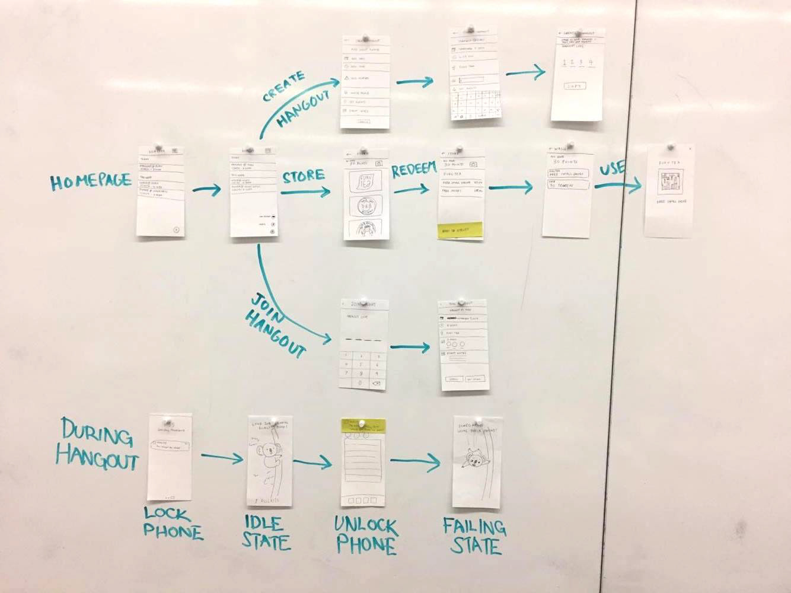
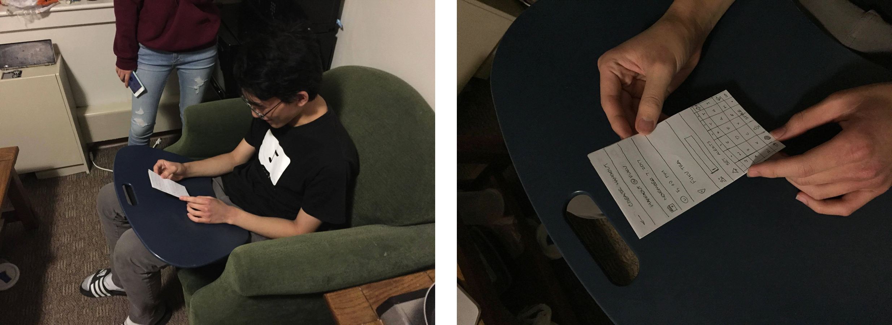
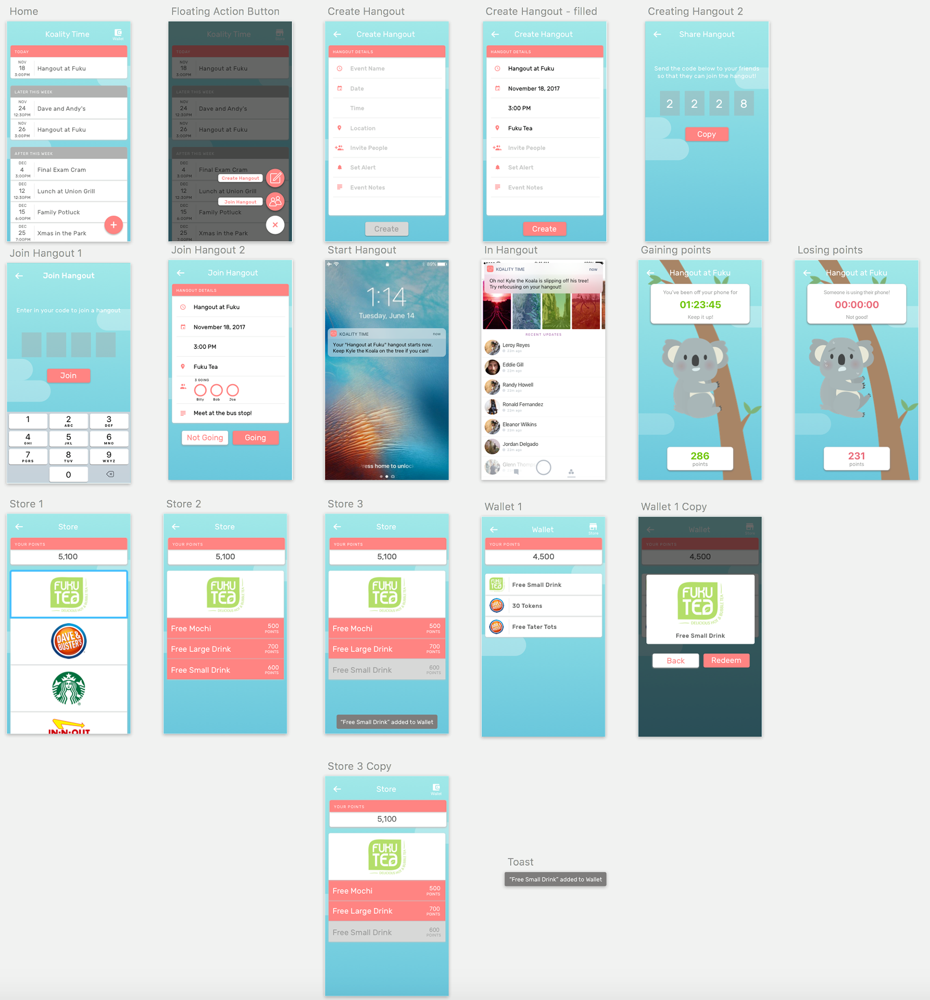
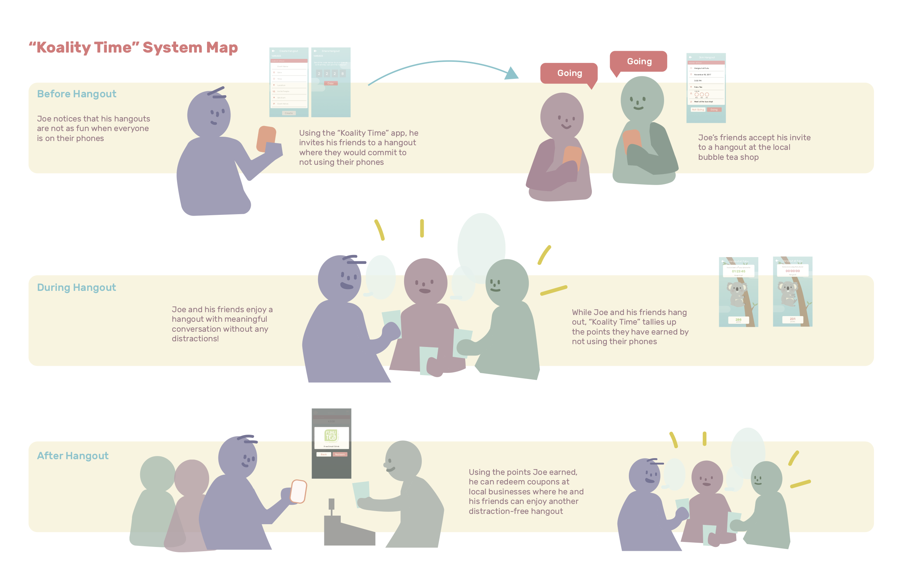

Sketch
Principle
Tools
Team
Christie Chong
Albert Yang
Alex Yeh
Albert Yang
Alex Yeh
Timeframe
Nov – Dec 2017
Role
Design
Research
Research
project overview
Research has shown that phone use during social gatherings lowers the quality of social interaction and conversation. Koality Time is a mobile application that seeks to reduce phone usage during social interactions. Users are incentivized with points earned during phone-less that can be redeemed in other social situations.
problemspace
The team was interested in exploring factors that affect the ways that people communicate, but we were especially interested in looking at methods of intervention. We researched into different topics to see which areas had potential. Some of the ideas we explored were: reward-based incentive systems, combatting conversation narcissism, and negative feedback systems.
We decided on creating a mobile application that rewards people for staying off their phones during social contexts. Extensive research shows how phones can negatively impact users (anxiety, distractions) and even social situations.
Smartphones have been both a blessing and a curse for social interaction; despite allowing for people to communicate immediately with one another regardless of distance, it creates an empathetic disconnect between two people having a conversation in-person. A study conducted by researchers at Virginia Tech University (2014) have shown that in-person conversations suffered as a result of phone usage by at least one of the participants. Overall, they felt that using a smartphone in the midst of a conversation made the other party feel like they either were not being listened to, or were not being paid attention to. With this phenomenon as a defined problem space, Koality Time is an app developed by our team to combat phone usage during social hangouts. By incentivizing the act of not using one’s phone, we aim to create stronger empathetic bonds between people when conversing in person.
introduction
While designing the app, we utilized a variety of persuasive design theories and strategies to inform our various iterations. The overarching concept we used for reference is the idea of conformity, which refers to when people change their behaviors due to their perceptions of what’s considered “normal” around them. A specific type of conformity we employed in our designs is normative influence--the idea that people conform to their environment out of fear of appearing different or deviant from what is expected. With normative influence, people make decisions in order to fit in and have others like and appreciate them. To incorporate a similar concept into Koality Time, we hope to create a culture through the app that makes people appreciate more empathetic interactions when the people they’re talking to aren’t on their phones.
The design of Koality Time is also influenced by the cognitive dissonance experienced by those who use their phone during social hangouts. Cognitive dissonance occurs when there is a disconnect between a person’s beliefs and their actions. In the case of social hangouts, people willingly go to have a conversation with others, but end up using their phones and resultantly weaken the empathetic connection they had with their friends. We theorize that cognitive dissonance occurs in this case as a result of insufficient justification, which is when a person makes up a reason in their head to justify their actions because there is not a visible, external reason for them to do so. In the case of a social hangout, one who uses his or her phone instead of conversing may tell themselves that responding to others over text is urgent, or that it’s normal to use a phone in the middle of a conversation.
Finally, our designs were informed by professor Robert Cialdini’s persuasion principle of consistency, which suggests that people want to remain consistent in their actions, and so they do what they normally do in order to avoid contradicting themselves. By looking into the contradiction between people’s desire to talk to others at social gatherings and the action of looking at their phones, we were inspired to guide users towards doing actions that are more consistent with what they do when interacting with others.
proof of concept
To explore the effectiveness of our idea, we conducted a series of studies. We observed the behavior of people within friend groups and presented them with a scenario similar to concept. Subjects were told to stay off their phones during the duration of the hangout. If they were successfully able to do so, then they would be rewarded with some incentive of their choice. In this case, participants were offered a free bubble tea drink if they successfully completed the hangout. Out of the our 6 participants, 4 were successful. The 2 that did not complete the challenge forgot about the challenge and checked their phones out of habit.
user flow
After solidifying our concept, we started to storyboard and diagram features of the application. We looked at apps with similar goals like "Pocket Points" (which is designed to keep users focused in class) as references to how the user experience was designed. 
user testing
We asked 5 participants to talk through their thought process and reactions while going through paper prototypes doing the following: Creating Hangouts, Joining Hangouts, Spending Points, Redeeming Coupons. Some of the feedback received: Generally easy to use and understand, awkward interaction with wallet and stores, confusion on how to get to wallet. 
Issues
- From the user interface, users were confused between the wallet and store. We originally had planned that users could redeem coupons to be saved (and used) from the wallet.
- The design we presented the user made the wallet only accessible from the store. This was not clear to users, and users had no idea how to acess the wallet to use a coupon.
wireframing
After receiving validation and feedback on our paper prototypes, we moved on to setting the feel and style of application. Once the mockups were done, we proceeded to do another round of user testing and got some additional feedback and suggestions. 
design
Upon opening Koality Time, the user sees a calendar of their upcoming hangouts that have been scheduled through the app. We want the user to be able to easily view the details of their hangouts so this calendar homepage is designed to be the first thing they see. From there, the user can quickly create or join a hangout through the floating action button (FAB). We modeled the hangout creation form to several common calendar apps like Google Calendar and the Calendar app on Apple products to align our product with the user’s mental model of event creation. After filling out the event details, the user is given a code to invite their friends to this hangout. The friends, going through the home screen and into the “join hangout” flow, would enter this code to accept or decline the hangout, a user flow that is similar to many mobile games for accepting friend requests. We chose to use a code as a way for invitation because this allows us to know that these phones are in a hangout together prior to the hangout. Using the location from the phone and this code, users would not have to start the hangouts manually. It was a very conscious decision for us to design the technology this way so phones are never introduced during the actual hangout.
Because Koality Time knows exactly when the hangout starts (based off the event details, location, and the proximity of the phones with each other), users can start their hangout seamlessly as if they were not using the app. During the hangout, users earn points as long as they don’t use their phones. Koality Time app can be opened during the hangout without any penalization, but the users would only see the image of Kyle Koala (the app mascot), how long they were able to stay off their phones collectively as a group, and how many points they have been earning. Upon using other apps on the phone, points would start being deducted exponentially for the whole group. In the app, Kyle Koala would be shown falling off his tree and the points counting down based off how long someone is on their phone. Users would also be notified at the beginning of their hangout that their hangout is starting and when someone uses their phone through a pushed notification. The tone of the message in the notification is friendly and encouraging as if Kyle Koala was talking to the user.
After hangouts, users can use the points they earned to buy coupons or discounts from local businesses from the in-app store. The store can be conveniently navigated to by a single swipe to the left from the home calendar screen, and another swipe left from the store screen leads the user to their wallet where their purchased coupons live. This navigational structure mimics semantically the order in which users would use this app. Hanging out would add up points, points can be used to purchase coupons at the store, and purchased coupons would appear in their wallets to be redeemed at the businesses in the future.

final product